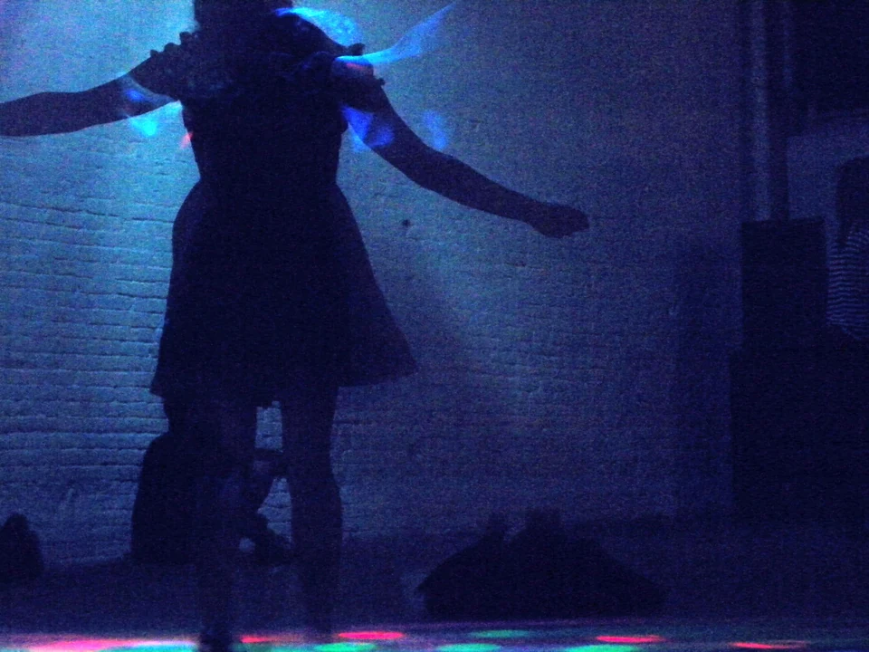
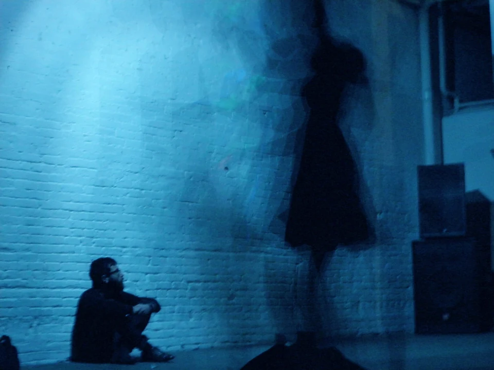
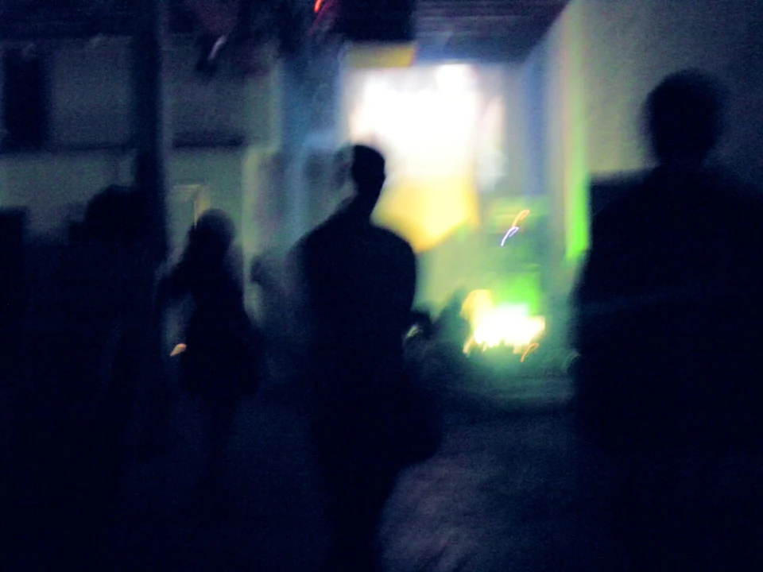

CF—PH—002 / 2009
Body / Exposure
Presence, interruption, disappearance.
Moving bodies and still rooms, recorded at different speeds. A figure gathers and disperses; a seated observer remains. Four photographs arranged as a sequence rather than a collection of blur effects.






